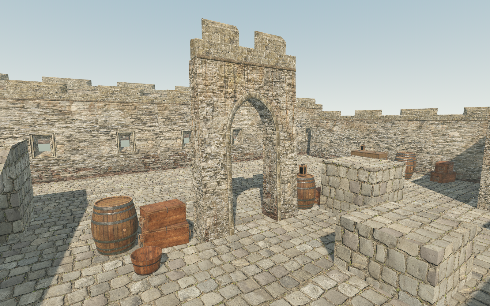
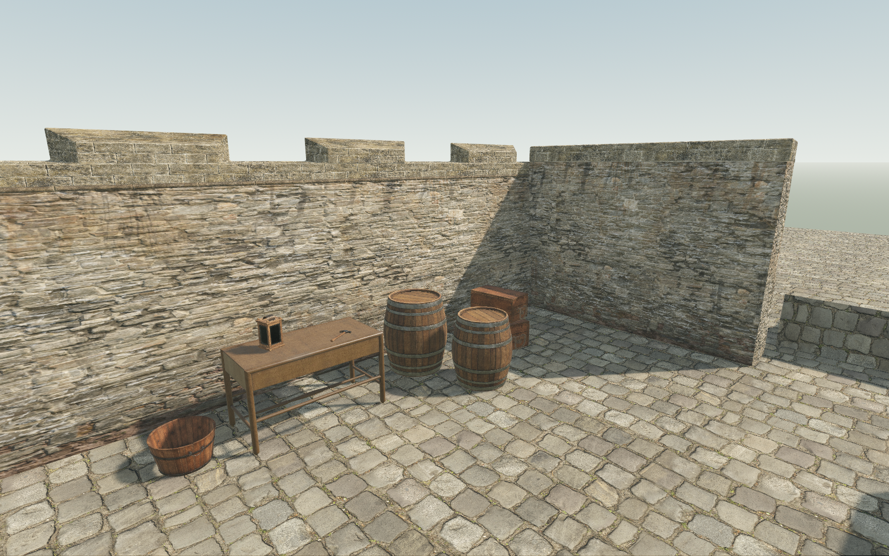
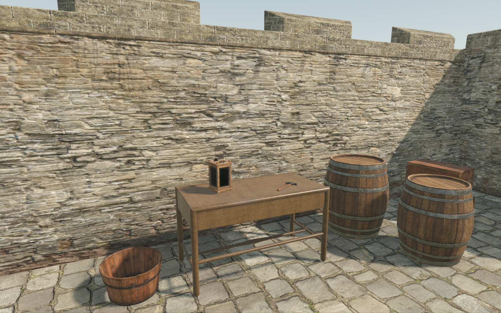

换一批素材，观察写实细节
已有后续版本：装配、植物与照明优化 · 同机位前后对比。本页保留第一轮实验记录。
针对上一批素材 Low Poly 风格明显的问题，新增独立的 Poly Haven 试验场。主要观察石砌门洞、墙面、木箱、酒桶、木桶、灯笼和工作台的近景表现。图片均为 Godot 4.7.2 Metal Forward+ 实机截图。
这是局部素材尝试，尚未确定采用这个美术方向。原有晴日、灰烬、科幻三场景和 F5 入口保持原样。此次同时调整了装配和照明，所以是同机位方向对比，并非严格控制变量的材质实验。
如何运行
- 在 Godot 左下角 FileSystem 中找到
res://envart/realism_trial/trial.tscn，双击打开。 - 按 F6 运行当前场景；F5 仍运行原有三方向对比入口。
- 按 5 看门洞，7 看墙边道具。按 3 自由观察，点击画面后用 WASD 移动、鼠标看向、E/Q 升降。
- 1 / 2 切第一 / 第三人称；4 切轨迹相机，P 播放暂停。0 白盒对照，H 隐藏提示，Esc 释放鼠标。
门洞、坡道、原有 17 个玩法碰撞体未修改；大件道具有简化盒形碰撞。门洞仍按原有 1.2 m × 2.3 m 碰撞净空试玩，上部拱券是装饰造型。白盒模式会隐藏新增美术并关闭新增碰撞。
门洞 · 同机位


墙边道具 · 同机位


近看：木纹、铁箍、接缝与地面

素材来源与替换范围
| 素材 | 本次用途 | 作者 |
|---|---|---|
| Modular Fort 01 | 提取门洞、墙段、远景塔楼网格 | Rico Cilliers |
| Wooden Crate 01 | 门口与发货区堆叠货箱 | James Ray Cock |
| Wine Barrel 01 | 酒桶与储运组合 | James Ray Cock |
| Wooden Bucket 02 | 工作区和门口小道具 | James Ray Cock |
| Wooden Lantern 01 / Wooden Hammer 01 | 桌面细节 | James Ray Cock |
| Small Wooden Table 01 | 维修工作台 | Ulan Cabanilla |
| Cobblestone Floor 03 | 连续地面与保留测试几何的表面 | 见素材页与 manifest |
共 7 个模型来源、1 套地面材质，30 处模型放置。下载 2K 版本，保留 glTF 的原始 UV、法线和金属/粗糙度贴图。地面使用 2.4 m 平铺尺度、OpenGL 法线与 ARM 通道（R=AO，G=粗糙度）。所有来源采用 Poly Haven CC0 许可，可用于商业项目；来源、作者和 SHA-256 保存在 envart/assets/polyhaven/manifest.json。
当前结论与限制
- 近景的木纹、铁箍、接缝与表面粗糙度更清楚，模型的简化轮廓不再是唯一的视觉信息。
- 石堡原始构件尺寸远大于测试场。为匹配现有白盒进行了非等比缩放，部分墙面产生拉伸感，近看清晰度也不均匀；正式采用前需要重新选择合适尺度的构件或适配 UV。
- 仅完成局部素材替换。坡道、跳台和台阶仍是测试几何，采用同套石材表面；没有新增植被、碎屑层、全场布景或远景地形。远景塔楼仅作为背景轮廓。
- 灯笼是未点亮的道具。未做完整灯光设计、烘焙、性能预算或全场美术验收。
- 已验证门洞双向通行、坡道到达平台、原始碰撞不变、四种相机和白盒/背景切换。技术通过不代表风格已获认可。
可编辑与可重建
场景入口 envart/realism_trial/trial.tscn；美术放置 art.tscn；背景 backdrop.tscn；地面 ground.tres。模型按门洞、围墙、工作台、发货区分组，可直接调整节点位置。离线构建脚本 envart/tools/build_realism_trial.gd 会覆盖这些生成文件，手工修改前请另存场景。
复现：先运行 python3 tools/install_polyhaven_trial.py，再由 Godot 导入资源并运行构建脚本。巡检沿用 tests/direction_sample_visual.gd -- realism，输出位于 /tmp/envart-realism/。